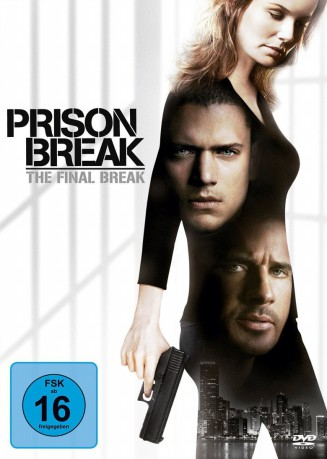

#5658 Prison Break: Ein letzter Schritt zur Freiheit
Alternativ: Prison Break: The Final Break
 
 IMDB-Wertung: 8.0 / 10
IMDB-Wertung: 8.0 / 10  Metascore: 0
Metascore: 0 
Michael Scofield und Sara Tancredi - die ein gemeinsames Kind erwarten - wollen endlich ein neues Leben beginnen. Doch dann wird Sara des Mordes beschuldigt und muss in ein berüchtigtes Frauengefängnis, wo sie nicht nur grenzenlose Brutalität erlebt, sondern auch in akuter Lebensgefahr schwebt. Michael sieht jetzt nur noch einen Ausweg um Sara zu retten: Er trommelt seine alten Freunde zusammen und trifft alle Vorbereitungen für den riskantesten und endgültig letzten Ausbruch.
Jahr: 2009
Dauer: 89 Minuten
FSK: 16
Land: USA Studio: 20th Century Fox Home EntertainmentTonspuren:
Untertitel:
Auflösung: 720p (1280x720) Größe: 4485 MB
Genre: Action, Thriller, Drama
Regisseur: Kevin Hooks, Brad Turner
Drehbuch: Matt Elisofon
Soundtrack:
Darsteller:
Datei: X:\HD-Serien\Prison Break\Prison Break Ein letzter Schritt zur Freiheit (2009, FSK16, 1280x720).mkv seit 02.03.2017
Festplatte: HD Serien(I-ST)
 Es gibt insgesamt 182 Filme in der Gruppe 'HD-Serien'
Es gibt insgesamt 182 Filme in der Gruppe 'HD-Serien'